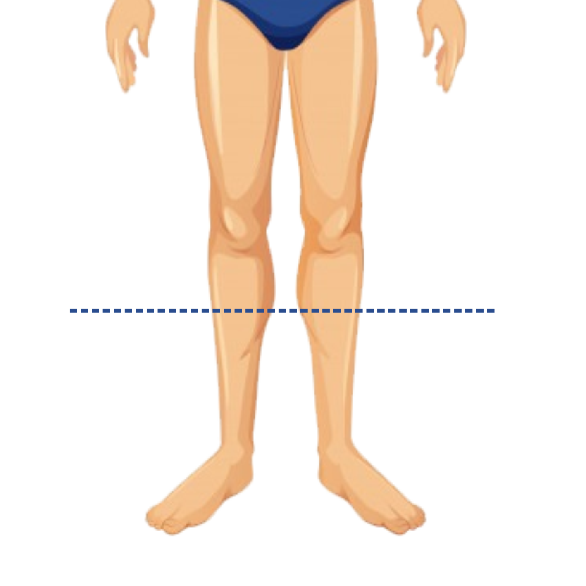
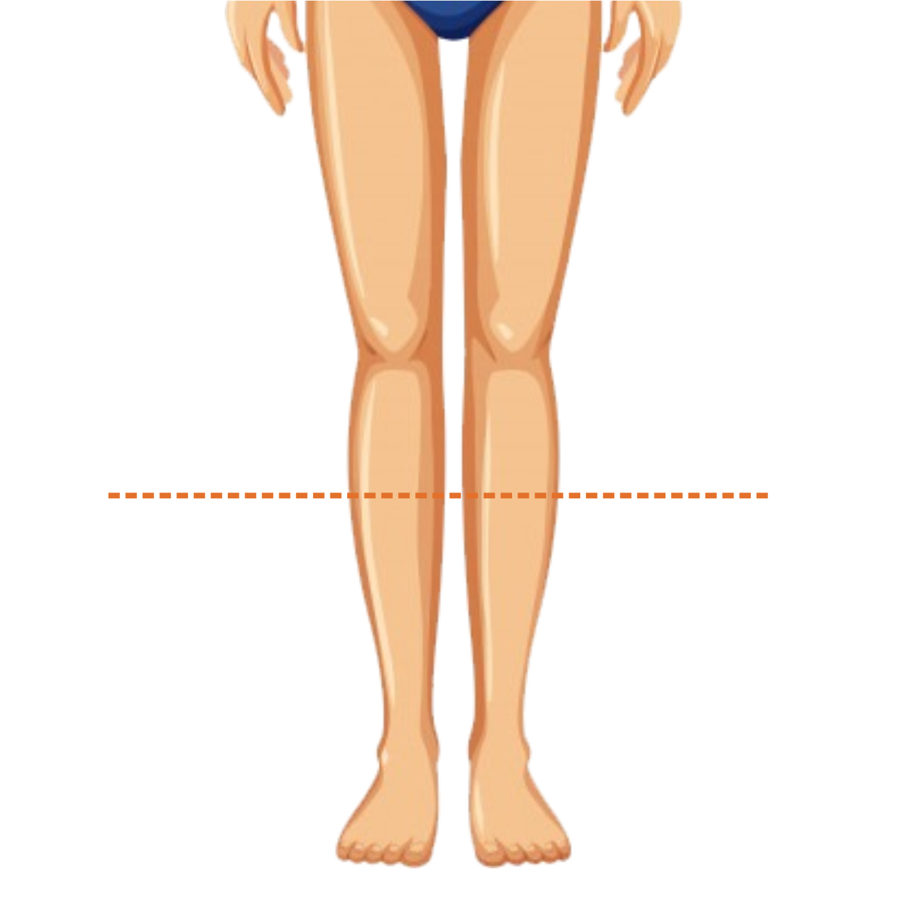

<!--
  Generated template for the AcPanturilhaPage page.

  See http://ionicframework.com/docs/components/#navigation for more info on
  Ionic pages and navigation.
-->
<ion-header>

  <ion-navbar color="cinza1">
    <ion-title>Panturilha</ion-title>
  </ion-navbar>

</ion-header>


<ion-content padding>
  
  

  <ion-list>
    <h2>Panturilha esquerda</h2>
    <ion-item><ion-input ></ion-input></ion-item>
  </ion-list>

  <ion-list>
    <h2>Panturilha direita</h2>
    <ion-item><ion-input></ion-input></ion-item>
  </ion-list>

 <button ion-button block color="amarelo1" (click)="continuar()">Continuar</button>
</ion-content>
